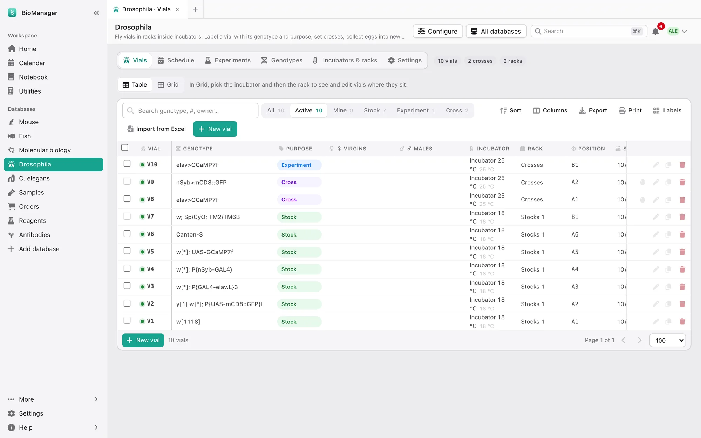
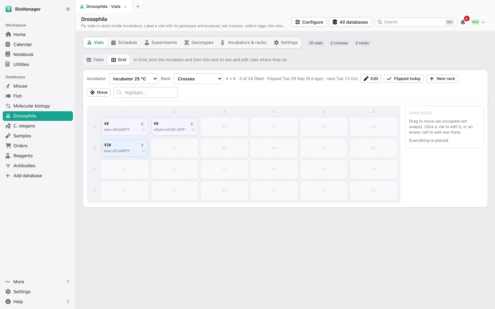

数据库
果蝇和线虫
放在架子上的果蝇管和线虫平板，转管周期随温度而定。
果蝇的果蝇管放在培养箱里的架子上；线虫的培养皿放在盒子里。标签页：果蝇管或培养皿、 计划（Schedule）、实验（Experiments）、基因型（Genotypes）、培养箱与架子（Incubators & racks）、冻存（Frozen，线虫）和设置（Settings）。
- 在培养箱与架子（Incubators & racks）里，添加每个培养箱及其温度，再在里面添加架子或盒子。
- 新建果蝇管（New vial，或培养皿）：基因型、用途和位置。果蝇的用途：保种、实验、杂交、处女蝇、子代、 扩繁、备份。线虫的用途：保种维持、实验、杂交、子代、同步化、RNAi、雄虫、饥饿。
- 计划（Schedule）显示已逾期、今天以及未来 7、14 或 30 天内的事。可以把果蝇管标记为已转管（Flipped；线虫： 已切块转板（Chunked）），收卵（Collect eggs）到新管（线虫：挑子代（Pick progeny）），并记录计数。间隔随 温度变化：在设置 → 温度与时间（Settings → Temperatures and timing）里设定；架子从 25 °C 移到 18 °C，计划会 自动调整。
- 在网格（Grid）视图中，架子上方的一行显示上次转管时间和下次到期时间（逾期时为红色）， 编辑（Edit）旁边的今天已转管（Flipped today）一键记录整个架子的转管（培养箱与 架子下的架子列表也有同样的按钮）。把鼠标悬停在这一行上可以看到它遵循的规则，例如 every 14 days at 25 °C（25 °C 下每 14 天）。
- 线虫：新建冻存批（New frozen lot）记录一次冻存；需要时复苏到新的培养皿上。
丢弃（Discard）让一个果蝇管退役（可以恢复）；复制到新管（Copy to a new vial）开始下一代。设置里还可以把 这些用词和用途改成你实验室的叫法。


实验（Experiments）标签页可以让果蝇管或培养皿接受药物、RNAi 或温度变化处理，并跟踪存活情况； 新建实验（New experiment）可以直接用一个架子上的果蝇管开始。见实验。
这一页对你有帮助吗？
没有